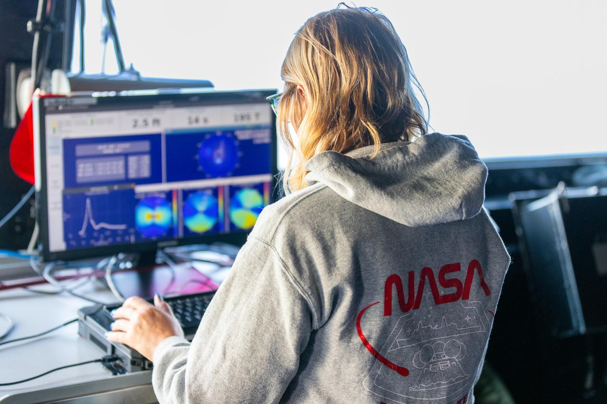

Bonus Page
Grace Scientist
Grace is a brilliant scientist who has dedicated her career to advancing our understanding of the universe through her work at NASA (the National Aeronautics and Space Administration). Born and raised in Houston, Texas, Grace was inspired by the nearby Johnson Space Center from a young age. She knew from early on that she wanted to be part of the team exploring the cosmos.

Character traits
- Curiosity: Emily is known for her insatiable curiosity. She approaches scientific problems with an open mind and a determination to uncover the mysteries of the cosmos.
- Resilience: Working in the field of astrophysics and space exploration can be challenging, with setbacks and obstacles being common.
- Collaborative Spirit: Emily understands the importance of teamwork in the field of space science.
Back to Index